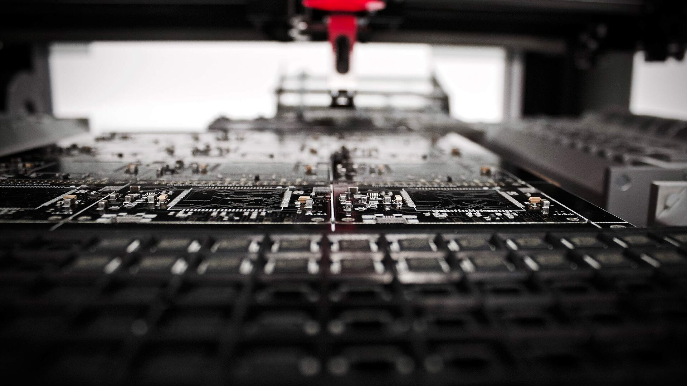

About
Two founders, one idea.
skAInet LLC is a pre-launch startup within the CDL Doha programme. We are Atiyeh Chatrsefid and Stephan Bökelmann, and we build WITNESS.
The founders
Business and engineering, side by side.
Co-founder · CRO
Atiyeh Chatrsefid
Atiyeh brings WITNESS to customers, partners and investors. She is responsible for business development at the engineering office nabla B, where she wins new customers, builds partnerships and writes the proposals.
She holds an MBA in Artificial Intelligence from Brand University of Applied Sciences and studied computer science at Ruhr University Bochum.
- Strategy and partnerships
- Investors
- Business development
Co-founder · CTO
Stephan Bökelmann
Stephan is the system architect of the skAInet Edge-Compute and has been building measurement systems since 2007. He runs the engineering office nabla B and lectures on programming and databases at THGA Bochum.
He is a trained mechanic and electrician with degrees in electrical engineering and computer engineering, and works on his doctorate in experimental hadron physics at Ruhr University Bochum, where thousands of synchronised channels are everyday work.
- Data acquisition
- Sensor development
- Edge architecture
Back office
Supported by the Auto-Intern team.
Odin and the Auto-Intern team work with us in the back office as freelancers. They are the people who built the measurement technology WITNESS grows out of.
Embedded hardware and firmware
Odin Holmes
Embedded developer and co-founder of Auto-Intern. Odin wrote the firmware of Auto-Intern's diagnostic interfaces, built the open USB oscilloscope OmnAIscope and is the author of several open-source libraries for embedded software.
User interfaces and physical modelling
Tabea Bökelmann
Physicist and frontend engineer. Tabea designed the field simulations behind the non-contact current measurement of the PowerProbe and turns industrial measurement data into views that operators and engineers can read.
Learning and models
René Glitza
Machine-learning engineer and researcher at Ruhr University Bochum. René works on anomaly detection, acoustic condition monitoring and federated learning: training models without exposing the underlying data.
Infrastructure and security
Philipp Lehmann
Infrastructure engineer, studying IT security at Ruhr University Bochum. Philipp builds and runs bare-metal Ceph and Kubernetes clusters. Every host is defined in code and can be rebuilt from the repository.
Where WITNESS comes from
From single projects to one platform.
At Auto-Intern the team built measurement and diagnostics systems for one customer at a time. Again and again it was the same chain, from the sensor to the model.
skAInet turns those project-specific solutions into a generic platform: WITNESS learns on time-series data inside the plant and is labelled by the maintenance staff who know the assets best.
Projects the team worked on at Auto-Intern include:
- Condition detection of switch actuators at Deutsche Bahn
- Temperature profile monitoring in soldering ovens at Kurtz Ersa
- Development of high-tech machines for Carl Zeiss